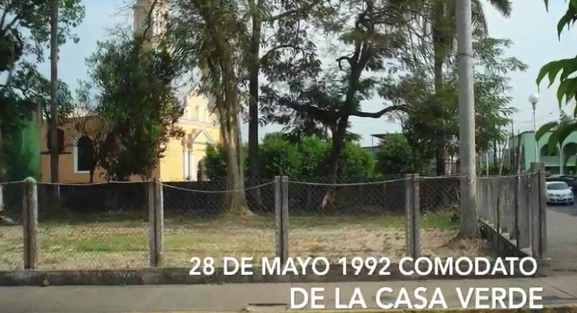
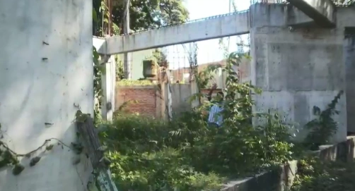
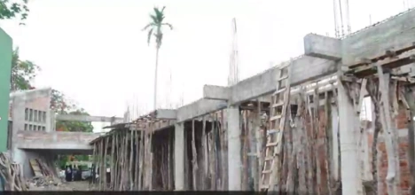
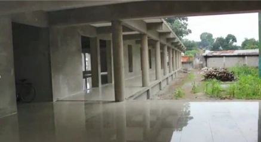
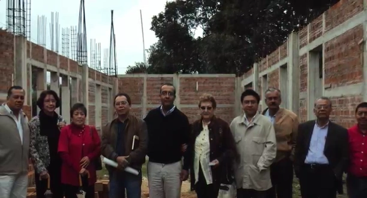

La Casa Verde es uno de los inmuebles más emblemáticos de Tuxtepec y, desde 1992, fue destinada para convertirse en un espacio cultural y de identidad regional. Ese año, el patronato recibió el inmueble en comodato, dando inicio al sueño de contar con un museo para la comunidad.

El camino no fue sencillo. En 2011, la construcción de la primera etapa se detuvo por falta de recursos municipales, pero gracias al compromiso del gobierno estatal y al apoyo de instituciones culturales, los trabajos pudieron retomarse.

En 2015 se reanudó la obra y se celebraron los 25 años de existencia del patronato.

Finalmente, en agosto de 2021, con el respaldo del programa PAICE y un financiamiento de más de un millón de pesos, se concluyó la primera etapa de construcción del Museo Regional Casa Verde de Tuxtepec.

Hoy, este espacio no solo resguarda la memoria histórica y cultural de la región, sino que también se ha convertido en un símbolo de perseverancia y colaboración comunitaria.
